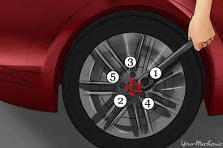

How to Change a Flat Tire
Learn the step-by-step process of safely changing a flat tire.
Step 1: Safety First
Pull over safely, turn on hazard lights, apply parking brake, and use wheel wedges.

Step 2: Gather Tools
Spare tire, jack, lug wrench, car manual, gloves, and flashlight.

Step 3: Loosen Lug Nuts
Use a lug wrench to loosen nuts before jacking up the car (turn counterclockwise).

Step 4: Jack Up the Car
Locate the jack points, place the jack, and lift the car until the flat tire is off the ground.

Step 5: Remove Flat Tire & Install Spare
Remove loosened lug nuts, take off the flat tire, align the spare, and hand-tighten the lug nuts.

Step 6: Tighten Lug Nuts & Final Checks
Lower the car and tighten the nuts in a crisscross pattern. Check tire pressure before driving.
Quick Quiz
What should you do first when you get a flat tire?
Video Tutorial
Watch this short video demonstration on changing a flat tire.